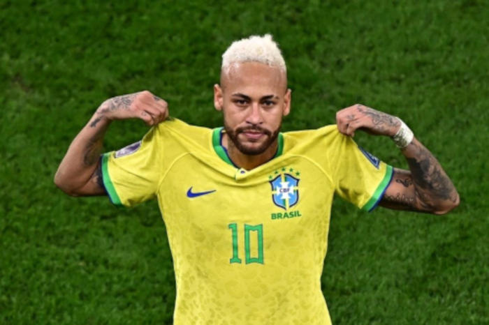

Neymar tem data prevista para estrear na temporada
O craque do peixe havia feito uma cirugia de meniscono fim de 2025, mas já tem data prevista para volta, essa que será domingo, contra o Noroeste, pelo paulistão.

Com o objetivo de ser convocado para a Copa do Mundo, Neymar tem se mostrado focado nos treinos e diz que o torneio é sua "última missão". Resta saber os próximos capítulos da carreira do craque brasileiro, e isso só o tempo irá nos dizer.
